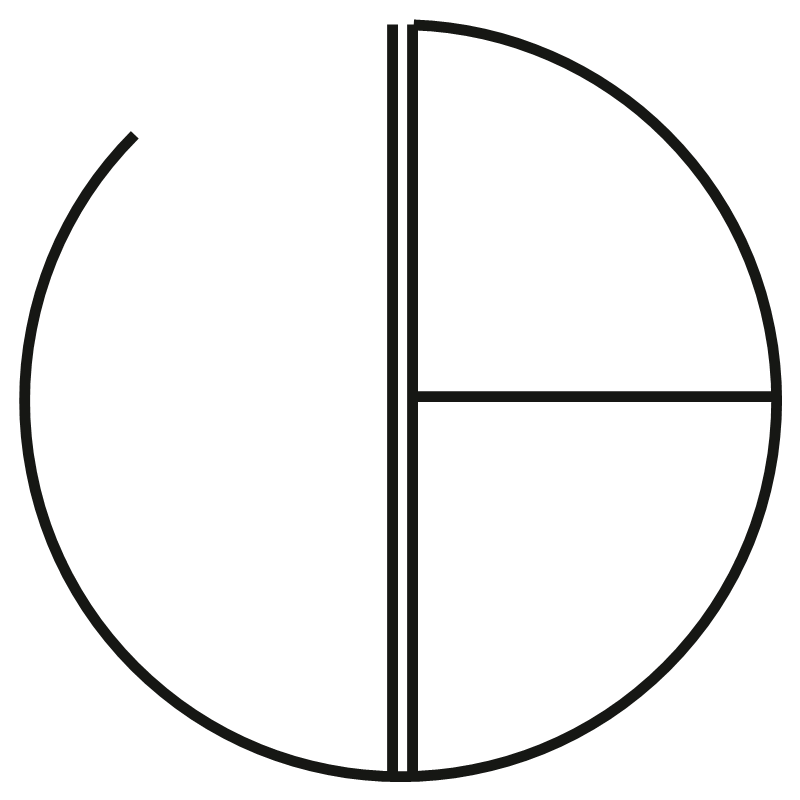
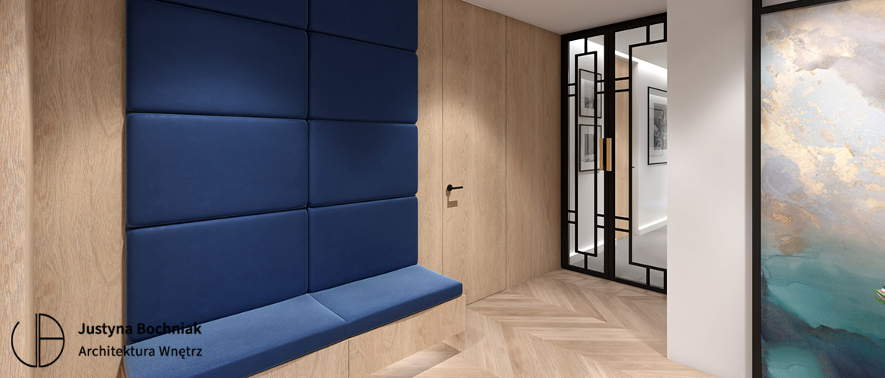
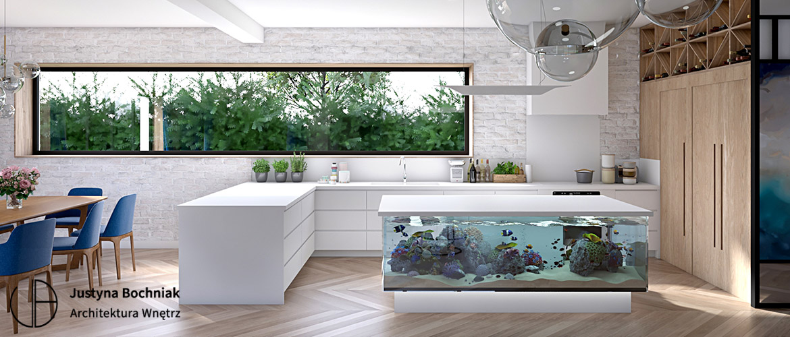
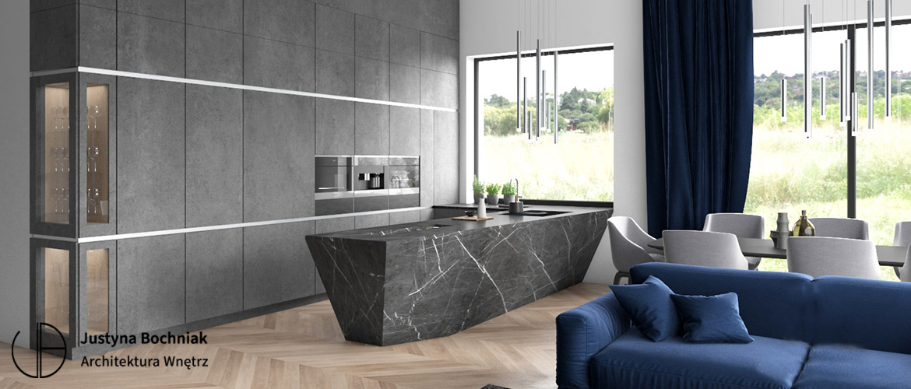
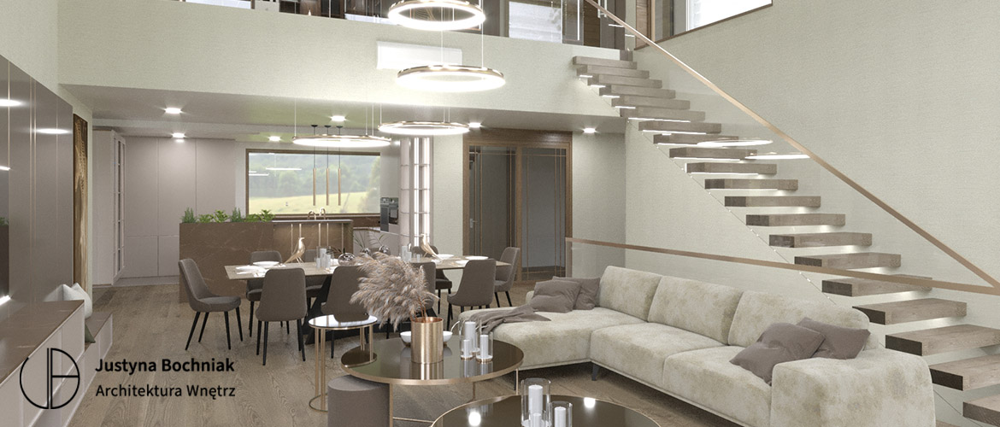

Pakiet XXX
Opis pakietu do uzupełnienia.
- Zakres współpracy do uzupełnienia
- Element oferty do uzupełnienia
- Element oferty do uzupełnienia
Cena do uzupełnienia
Zapytaj o projekt

Justyna
Bochniak
ARCHITEKTURA WNĘTRZ
Nazywam się Justyna Bochniak i projektuję wnętrza, w których estetyka spotyka się z codziennością.
Od 15 lat tworzę projekty domów, apartamentów, rezydencji i przestrzeni biznesowych. Lubię wnętrza spokojne, dopracowane i przemyślane w detalu, ale zawsze zaczynam od funkcji.
Bo dobry projekt nie powstaje tylko z pięknych inspiracji. Powstaje z rozmowy, obserwacji i decyzji, które później naprawdę ułatwiają życie.
A jeśli planujesz swoją przestrzeń, napisz. Chętnie porozmawiam.


Zakres współpracy dopasowany do Ciebie.
Opis pakietu do uzupełnienia.
Cena do uzupełnienia
Zapytaj o projektOpis pakietu do uzupełnienia.
Cena do uzupełnienia
Zapytaj o projektOpis pakietu do uzupełnienia.
Cena do uzupełnienia
Zapytaj o projekt
Moje wnętrza na łamach „Werandy”.


Bądź na bieżąco.
BochniakARCHITEKTURA WNĘTRZ

BochniakARCHITEKTURA WNĘTRZ


